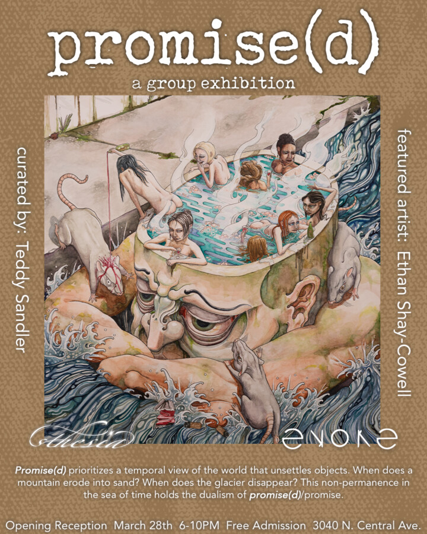

Promise(d)
The exhibition combines a revisionist history and speculative storytelling to re-contextualize what being alive in America could mean.
Evoke Gallery welcomes Teddy Sandler (STHESIA) as our first guest Curator. Taking on the opportunity to transform our walls, Teddy proudly brings to you, “Promise(d)”. (In Teddy’s words) “The exhibition combines a revisionist history and speculative storytelling to recontextualize what being alive in America could mean. At a time when capitalism has killed radical change and futures that look different from now, this exhibition encourages audience members and artists to take a leap of faith, together. Instead of a sense of doom, I hope the curation in this exhibit will allow a space for a reorientation to the present, through awakening sensory memory and providing speculative touchstones for solidarity during the current cultural revolution.